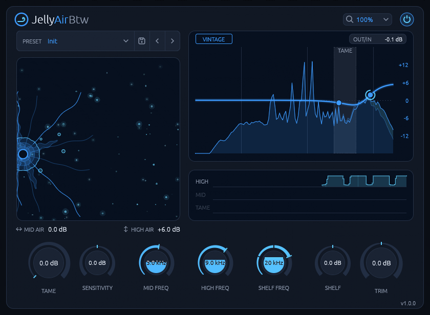
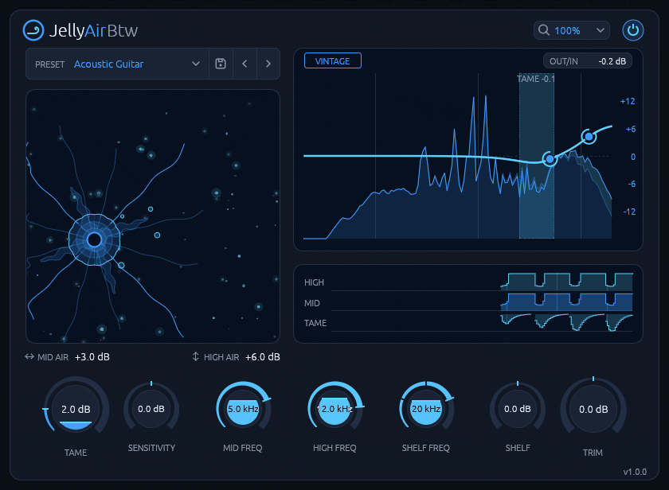

JellyAirBtw adds air: the breath of a voice, the shine of strings, the top of a mix. It doesn't turn the treble up the same everywhere, as a shelf does. Two bands, MID AIR for presence and HIGH AIR for air, add their lift while they are quiet against the whole signal and less as they get louder, so the vowels, the breaths and a dull passage get the air, and an s, a cymbal or a bright mix gets much less: with the same air on the vowels of 100 sung takes, an s got 0.7 dB of it where a static shelf gave 4 dB. Drag the jellyfish: across sets MID AIR, up sets HIGH AIR, and bubbles rise from it while air goes in. The display beside it shows the spectrum with the curve you set and the curve the music gets now. TAME cuts a harsh presence where it sticks out, a static shelf lifts or tilts the top however loud it is, and it all plays with no latency. It is not a de-esser or an exciter: it adds no harmonics, only level to the top where it is missing.
Read the manual for every control and how to use it.
Screenshots


What it's for
Features
- Air that follows the music: MID AIR (up to +12 dB from 1 to 8 kHz) and HIGH AIR (up to +15 dB from 4 to 16 kHz) lift their band fully while it is quiet against the whole signal and less as it gets louder. SENSITIVITY sets where they back off.
- A gain before it changes nothing: the bands read their level against the whole, so a louder or quieter input gets the same air. VINTAGE reads them against a fixed level instead, as hardware does.
- Pauses stay as they were: in a pause the bands' lift fades out over 20 ms, so a room's hiss isn't lifted.
- TAME: a bell at 2.5 to 5.5 kHz that cuts up to 12 dB when the presence sticks out of the whole, within 5 ms.
- A static shelf: SHELF lifts or cuts the top by up to 15 dB, its pole at 2.5, 5, 10, 20 or 40 kHz, within 0.7 dB of the analog curve up to ±12 dB.
- No latency: 0 samples. Everything at 0 passes the input unchanged, to the bit.
- Click-free: dragging the pad or a corner over a bass note leaves no ticks; VINTAGE and the power switch crossfade.
- A jellyfish pad and a display you can play: bubbles rise while air goes in; on the display, drag a band's dot to move its corner and its air, and hold the middle button on it to hear only that band's air, or press TAME's column to hear what TAME takes off.
- OUT/IN: reads how much louder the output is than the input, loudness-weighted; a click takes the difference off with TRIM.
- The last seconds of lift and TAME's cut, redrawn at once as you turn SENSITIVITY or an air.
- Light: 0.18 % of a CPU core at the defaults, stereo at 48 kHz, 0.25 % with the window open, and next to nothing on silence.
- Presets: six built in beside Init, and your own.
- Zoom from 100 to 200 %.
- No network access and no telemetry.
Install
Download the latest version from the Releases page, or with these commands:
curl -LO https://github.com/jelly-comet/JellyAirBtw-release/releases/download/v1.0.0/JellyAirBtw-1.0.0-linux-x86_64.tar.gz
curl -LO https://github.com/jelly-comet/JellyAirBtw-release/releases/download/v1.0.0/JellyAirBtw-1.0.0-linux-x86_64.tar.gz.sha256
sha256sum -c JellyAirBtw-1.0.0-linux-x86_64.tar.gz.sha256 && tar xzf JellyAirBtw-1.0.0-linux-x86_64.tar.gz
cd JellyAirBtw-1.0.0-linux-x86_64
Install for your user:
mkdir -p ~/.clap
rm -f ~/.clap/JellyAirBtw.clap && cp JellyAirBtw.clap ~/.clap/
Or for all users:
sudo mkdir -p /usr/lib/clap
sudo rm -f /usr/lib/clap/JellyAirBtw.clap && sudo cp JellyAirBtw.clap /usr/lib/clap/
Removing the old copy first avoids overwriting a file a running host has loaded. Then rescan plugins in your DAW.
To uninstall:
rm -f ~/.clap/JellyAirBtw.clap
Your presets stay in ~/.local/share/JellyAirBtw/presets/; delete that folder too if you want them gone.
FAQ
Is it free?
Yes. The download is free and MIT-licensed.
Is there a VST3 or LV2 version?
No. Releases contain the CLAP plugin only.
Does it run on ARM, like a Raspberry Pi or Apple Silicon?
No. It needs Linux on x86-64, on a CPU with AVX2.
Which hosts does it work in?
Any CLAP host. It was tried in Bitwig Studio and REAPER.
Does it work on Wayland?
Through XWayland. The editor also needs a Vulkan driver.
Is it a de-esser or an exciter?
Neither. It adds no harmonics, only level to the top where it is quiet, and backs off where the top is already loud, so an s gets much less air than the vowel around it. TAME cuts a harsh presence, but it isn't a de-esser either.
What's new in v1.0.0
23 Nov 2026 · Release on GitHub
JellyAirBtw 1.0: an air enhancer that lifts the top of a voice or a mix where it is quiet and backs off where it is already bright, steered with a jellyfish.
- Air that follows the music: MID AIR (up to +12 dB from 1 to 8 kHz) and HIGH AIR (up to +15 dB from 4 to 16 kHz) lift their band while it is quiet against the whole signal and less as it gets louder, so the breaths and a dull passage get the air and an s or a cymbal much less. SENSITIVITY sets where they back off; VINTAGE reads them against a fixed level, as hardware does.
- The jellyfish pad: across sets MID AIR, up sets HIGH AIR, and bubbles rise while air goes in.
- TAME cuts up to 12 dB at 2.5 to 5.5 kHz where the presence sticks out: a belted note, a harsh guitar.
- A static shelf, ±15 dB with its pole at 2.5 to 40 kHz, that tilts the top octaves with no corner in the band.
- A display you can play: the spectrum with the curve set and the curve heard now; drag a dot to move a band, hold it to hear only that band's air, press TAME's column to hear what TAME takes off. Three lanes show the last seconds of lift and cut.
- OUT/IN reads how much louder the output is than the input; a click takes the difference off with TRIM.
- No latency, and everything at 0 passes the input to the bit.
- Presets: six built in beside Init, and your own.
- 0.18 % of a CPU core at the defaults, stereo at 48 kHz. Needs a CPU with AVX2.
License
MIT, see LICENSE. The licenses of the third-party code in the binaries are in
THIRD-PARTY-LICENSES.txt in each release archive.
VST is a registered trademark of Steinberg Media Technologies GmbH. CLAP is an open standard by the free-audio project. Dolby is a trademark of Dolby Laboratories, Fresh Air of Slate Digital and Air Band of Maag Audio. JellyAirBtw is an independent project. It isn't affiliated with or endorsed by Steinberg, Dolby, Slate Digital or Maag Audio, and it contains none of their code.